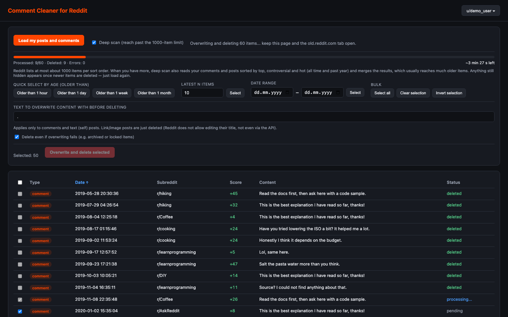

Comment Cleaner for Reddit
Load your Reddit posts and comments, select them by date, then bulk overwrite and delete them.

Features
- Loads all your posts and comments into one sortable table
- Deep scan combines several sort orders to reach items beyond Reddit's 1000-item listing limit
- Overwrites comments and text posts with a text of your choice before deleting them
- Select by age, latest N, date range, or pick items by hand
- Progress bar with a time estimate for loading and deleting
- Everything runs locally in your browser – no server, no analytics, no tracking